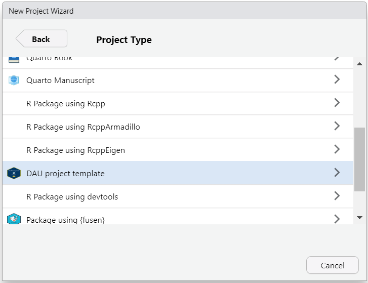

The RStudio projects of your colleagues all have a different structure? It is difficult to navigate and understand others’ projects? Or even your own project from a few months/years ago? Therefore, it is useful if you all agree on a standard folder structure for your analysis. Templates can help to enforce this.
This package provides one standard project folder structure template for R projects geared towards DAU analysis use cases. Whenever you start a new project in RStudio, this package provides the standard folder structure directly in your code editor. Also, it can help you improving reproducibility by using git and renv.

Usage
To create a new project with the folder structure shown below, follow these steps:
Install the package
Restart RStudio
-
When creating a new RStudio project with the “New directory” option, choose “DAU project template”
(RStudio Project Wizard showing the “DAU project template” option)
- During initialization you can select if you want to include a package structure (check “Include folders and files required to build a R package (recommended).”)
- You can select if you want to generate a GitHub suitable
.gitignorefile (check “Create a .gitignore file for GitHub”) - Once you’ve created the project, you will be provided with the instructions how to create a git repository for your project and connect to GitHub/Azure DevOps.
Template overview
A new project contains the following folder structure:
|-- 01_Data
| |-- 01_Raw
| `-- 02_Clean
|-- R
| |-- load_data.R
| |-- helpers.R
| |-- src
|-- tests
| |-- testthat.R
| |-- testthat
| | |-- test-load_data.R
| | |-- test-helpers.R
|-- 02_Analysis
| |-- analysis.Rmd
| |-- analysis.qmd
|-- 03_Documentation
| |-- 01_text
| `-- 02_figures
|-- 04_Outputs
| |-- 01_results
| |-- 02_figures
| `-- 03_tables
|-- 05_Misc
| |-- 01_public
| |-- 02_priv
|-- README.md
|-- proj_name.Rproj
|-- .gitignore
|-- .Rprofile
|-- renv Planned features
- Collaboration with DAU team to agree on folder and file structure.
- Further testing and documentation of the package.
- More support for a package folder structure.
- Integration with QA (automated QA document).
- Support for Shiny apps.
Acknowledgements
This repository is very much built on the repository analysistemplates by jonas-hag (Jonas Hagenberg).
They should take all the credit for producing the core infrastructure of this package.